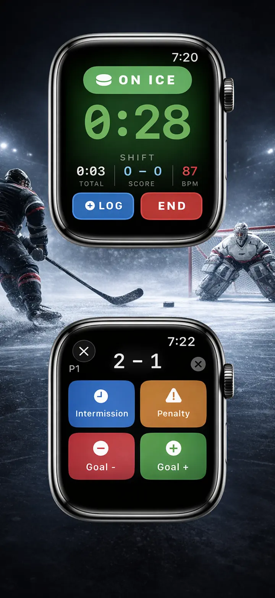

Ice Time Track
ホッケーシフト運動記録, ゴール記録, イベント統計
Apple Watchでアイスタイムを自動計測。さらにギア管理とスケート研磨のリマインダーが新登場。試合後にシフト・統計・健康データをまとめて確認。
App Storeからダウンロード
アプリについて
あなたのシフト。自動で記録。
Ice Time Trackは、Apple Watchを使って滑走中かベンチにいるかを検出します。ボタン操作不要。セッションを開始してプレーするだけ。
仕組み
モーション検出アルゴリズムが加速度計、ジャイロスコープ、GPSデータを分析し、滑走と休憩を区別します。iPhoneはライブ更新を同期し、リアルタイムまたは試合後に統計を確認できます。
機能
- シフト自動検出、モーション・健康指標トラッキング
- 総アイスタイムとシフト別内訳
- 試合記録 – ゴール、ペナルティ、インターミッション
- シフトごとの心拍数とカロリー
- アイス/ベンチパターンのビジュアルタイムライン
- トレンド付きセッション履歴
- 各リンクの位置タグ付け
- 試合、練習、スクリメージモード
- オプションの触覚アラート
- CSV・JSONへのデータエクスポート
APPLE連携
Apple Watchで動作。Apple Healthと同期。
プライバシー
すべてのデータはローカル保存。アカウント不要。
ホッケー選手による、ホッケー選手のための開発。アイスタイムを把握。プレーを向上。
Ice Time Trackは、Apple Watchをインテリジェントなホッケーコンパニオンに変えます。氷上にいるかベンチにいるかを正確に把握。ボタンなし。気を散らすものなし。純粋な自動トラッキングで、最高のプレーに集中できます。
仕組み
Apple Watchでセッションを開始したら、あとは忘れてOK。高度なモーション検出がリアルタイムでデータを分析。iPhoneはライブ更新で同期を維持 – スタンドから統計を見るか、最終ブザー後にすべてを確認。
発見できること
- 総アイスタイム — 重要な場所で過ごした正確な分数を把握
- シフト別内訳 — 各シフトの時間、心拍数、カロリー
- 試合ログ – ピリオドごとのゴール/ペナルティ
- 心拍数トラッキング — 滑走時 vs 回復時の努力を監視
- 消費カロリー — Apple Healthから同期された正確なデータ
- セッションタイムライン — アイス/ベンチパターンのビジュアルチャート
- 位置メモリ — プレーしたリンクを自動タグ付け
- 履歴トレンド — セッションを比較し、経時的な進歩を追跡
すべてのスケーターのために
草ホッケー、ハードな練習、スクリメージでの競争 – Ice Time Trackは適応します。セッションをタイプ別にタグ付け、対戦相手名を追加、個人的なホッケー日記を作成。
シームレスなApple連携
- Apple Healthにワークアウトを同期
- セッション中はバックグラウンドで動作
- アイス/ベンチ移行時のオプション触覚アラート
- 低バッテリー消費に最適化
プライバシー優先
あなたのデータはあなたのもの。デバイスにローカル保存。アカウントなし。データ販売なし。絶対に。
選手による、選手のための
アイスタイムの推測に疲れたホッケー愛好家が開発。本物の数字。本物の洞察。摩擦ゼロ。
今すぐダウンロードして、アイスタイムに悩むことはもうありません。
スケート靴を履いて。パックをドロップ。あとは私たちにお任せ。
Privacy Policy: https://masawata.net/privacy-policy.html Terms Of Service: https://www.apple.com/legal/internet-services/itunes/dev/stdeula/
スクリーンショット


Ice Time Track
Apple Watchでアイスタイムを自動計測。さらにギア管理とスケート研磨のリマインダーが新登場。試合後にシフト・統計・健康データをまとめて確認。
App Storeからダウンロード